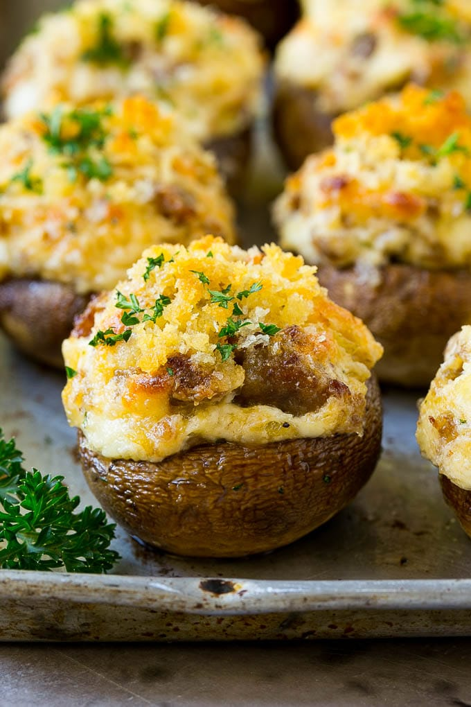

Appetizer: Cheese Stuffed Mushrooms

Description
Stuffed mushrooms might seem intimidating to some, but I assure you, they are super easy to make. If you can
handle a little bit of chopping and some quick sauteeing, then you will totally be able to handle this stuffed
mushroom recipe! These tender mushroom caps are stuffed with creamy goat and Neufchatel cheese filling. They are
little
bites of heaven perfect for any occasion, and the must have appetizer for any party!
Once you master an easy stuffed mushroom recipe like this, you will be able to get creative and play around with
different fillings to create your own version of stuffed mushrooms. The possibilities are endless!
Ingredients
- 6 Tablespoons of Butter
- 2 Pounds of Medium Fresh Mushrooms (w/ removed stems)
- 1 (8 Ounce) Package of Neufchatel Cheese
- 1 (4 Ounce) Package of Goat Cheese Crumbs
- 2 Tablespoons of Finely Chopped Onion
- 1/2 Cup of Chopped Mushroom Stems
- 1/4 Cup of Butter
- 1 Tablespoon of Finely Chopped Garlic
Steps
- Heat two large skillets over medium-high heat, melt 3 tablespoons of butter in each of the skillets and
divide the mushroom caps between the two. Cook and stir the mushroom caps until the edges are slightly soft,
about 5 minutes. Place the mushrooms in a colander to drain and cool.
- Stir together the cream cheese and goat cheese until well blended. Mix in the onions and mushroom stems. Use
all of the filling to generously fill each mushroom cap and place, filling side up, in a baking pan.
- Preheat the oven broiler for high heat.
- Melt the remaining 1/4 cup of butter with the garlic in a small saucepan over medium heat, cook the garlic
for 1 minute once the butter has completely melted. Drizzle the garlic butter over the filled mushroom caps.
- Place the pan of mushrooms in the preheated oven to broil until golden brown, about 5 minutes.